Code
library(tidyverse)
library(easystats)
library(patchwork)
library(ggside)
library(EGAnet)
library(tidygraph)
library(ggraph)
set.seed(42)library(tidyverse)
library(easystats)
library(patchwork)
library(ggside)
library(EGAnet)
library(tidygraph)
library(ggraph)
set.seed(42)df <- read.csv("../data/data_participants.csv")items <- filter(df, !is.na(MINT_Awareness_ExAc_35))
names(items) <- str_remove(names(items), "MINT_")
colors <- c(MINT="#00BCD4", MINTi="#00838F", IAS="#F44336", MAIA="#FF9800", MAIAi="#EF6C00", MAIAmin="#E65100", BPQ="#795548")labels <- list(
MINT_Deficit_Urin_1 = "I sometimes feel like I need to urinate or defecate but when I go to the bathroom I produce less than I expected",
MINT_Deficit_Urin_2 = "I often feel the need to urinate even when my bladder is not full",
MINT_Deficit_Urin_3 = "Sometimes I am not sure whether I need to go to the toilet or not (to urinate or defecate)",
MINT_Deficit_CaCo_4 = "Sometimes my breathing becomes erratic or shallow and I often don't know why",
MINT_Deficit_CaCo_5 = "I often feel like I can't get enough oxygen by breathing normally",
MINT_Deficit_CaCo_6 = "Sometimes my heart starts racing and I often don't know why",
MINT_Deficit_CaNo_7 = "I often only notice how I am breathing when it becomes loud",
MINT_Deficit_CaNo_8 = "I only notice my heart when it is thumping in my chest",
MINT_Deficit_CaNo_9 = "I often only notice how I am breathing when my breathing becomes shallow or irregular",
MINT_Deficit_Olfa_10 = "I often check the smell of my armpits",
MINT_Deficit_Olfa_11 = "I often check the smell of my own breath",
MINT_Deficit_Olfa_12 = "I often check the smell of my farts",
MINT_Deficit_Sati_13 = "I don't always feel the need to eat until I am really hungry",
MINT_Deficit_Sati_14 = "Sometimes I don't realise I was hungry until I ate something",
MINT_Deficit_Sati_15 = "I don't always feel the need to drink until I am really thirsty",
# MINT_Awareness_SexA_16 = "I always feel in my body if I am sexually aroused",
# MINT_Awareness_SexA_17 = "I can always tell that I am sexually aroused from the way I feel inside",
# MINT_Awareness_SexA_18 = "I always know when I am sexually aroused",
MINT_Awareness_SexS_19 = "During sex or masturbation, I often feel very strong sensations coming from my genital areas",
MINT_Awareness_SexS_20 = "When I am sexually aroused, I often notice specific sensations in my genital area (e.g., tingling, warmth, wetness, stiffness, pulsations)",
MINT_Awareness_SexS_21 = "My genital organs are very sensitive to pleasant stimulations",
MINT_Awareness_SexO_22 = "In general, I am very sensitive to changes in my genital organs",
MINT_Awareness_SexO_23 = "I can notice even very subtle changes in the state of my genital organs",
MINT_Awareness_SexO_24 = "I am always very aware of the state of my genital organs, even when I am calm",
MINT_Awareness_UrSe_25 = "In general, I am very aware of the sensations that are happening when I am urinating",
MINT_Awareness_UrSe_26 = "In general, I am very aware of the sensations that are happening when I am defecating",
MINT_Awareness_UrSe_27 = "I often experience a pleasant sensation when relieving myself when urinating or defecating)",
MINT_Awareness_RelA_28 = "I always know when I am relaxed",
MINT_Awareness_RelA_29 = "I always feel in my body if I am relaxed",
MINT_Awareness_RelA_30 = "My body is always in the same specific state when I am relaxed",
MINT_Awareness_StaS_31 = "Being relaxed is a very different bodily feeling compared to other states (e.g., feeling anxious, sexually aroused or after exercise)",
MINT_Awareness_StaS_32 = "Being sexually aroused is a very different bodily feeling compared to other states (e.g., feeling anxious, relaxed, or after physical exercise)",
MINT_Awareness_StaS_33 = "Being anxious is a very different bodily feeling compared to other states (e.g., feeling sexually aroused, relaxed or after exercise)",
MINT_Awareness_ExAc_34 = "I can always accurately feel when I am about to burp",
MINT_Awareness_ExAc_35 = "I can always accurately feel when I am about to fart",
MINT_Awareness_ExAc_36 = "I can always accurately feel when I am about to sneeze",
MINT_Sensitivity_Card_37 = "In general, I am very sensitive to changes in my heart rate",
MINT_Sensitivity_Card_38 = "I can notice even very subtle changes in the way my heart beats",
MINT_Sensitivity_Card_39 = "I often notice changes in my heart rate",
MINT_Sensitivity_Resp_40 = "I can notice even very subtle changes in my breathing",
MINT_Sensitivity_Resp_41 = "I am always very aware of how I am breathing, even when I am calm",
MINT_Sensitivity_Resp_42 = "In general, I am very sensitive to changes in my breathing",
# MINT_Sensitivity_Sign_43 = "When something important is happening in my life, I can feel immediately feel changes in my heart rate",
# MINT_Sensitivity_Sign_44 = "When something important is happening in my life, I can immediately feel changes in my breathing",
# MINT_Sensitivity_Sign_45 = "When something important is happening in my life, I can feel it in my body",
MINT_Sensitivity_Gast_46 = "I can notice even very subtle changes in what my stomach is doing",
MINT_Sensitivity_Gast_47 = "In general, I am very sensitive to what my stomach is doing",
MINT_Sensitivity_Gast_48 = "I am always very aware of what my stomach is doing, even when I am calm",
MINT_Sensitivity_Derm_49 = "In general, my skin is very sensitive",
MINT_Sensitivity_Derm_50 = "My skin is susceptible to itchy fabrics and materials",
MINT_Sensitivity_Derm_51 = "I can notice even very subtle stimulations to my skin (e.g., very light touches)"
# MINT_Sensitivity_SexC_52 = "When I am sexually aroused, I often feel changes in the way my heart beats (e.g., faster or stronger)",
# MINT_Sensitivity_SexC_53 = "When I am sexually aroused, I often feel changes in my breathing (e.g., faster, shallower, or less regular)",
# MINT_Sensitivity_SexC_54 = "When I am sexually aroused, I often feel changes in my temperature (e.g., feeling warm or cold)"
)
cleanlabels <- function(x, qname=FALSE) {
is_factor <- FALSE
if(is.factor(x)) {
is_factor <- TRUE
vec <- x
x <- levels(x)
}
x <- x |>
str_replace("MINT_", ifelse(qname, "MINT - ", "")) |>
str_replace("MAIA_", ifelse(qname, "MAIA - ", "")) |>
str_replace("_", " (")
x <- ifelse(str_detect(x, "\\("), paste0(x, ")"), x)
if(is_factor) {
levels(vec) <- x
return(vec)
}
x
}ega1 <- bootEGA(
items,
EGA.type = "hierEGA",
model = "glasso", # BGGM
algorithm = "leiden",
type="resampling",
plot.itemStability=FALSE,
typicalStructure=TRUE,
plot.typicalGraph=FALSE,
iter=500,
seed=3, ncores = 4)
save(ega1, file="models/ega1.RData")load("models/ega1.RData")
itemstability <- EGAnet::itemStability(ega1, IS.plot=FALSE)
plot(itemstability)items <- items |>
select(-contains("UrSe"))ega2 <- bootEGA(
items,
EGA.type = "hierEGA",
model = "glasso", # BGGM
algorithm = "leiden",
type="resampling",
plot.itemStability=FALSE,
typicalStructure=TRUE,
plot.typicalGraph=FALSE,
iter=500,
seed=3, ncores = 4)
save(ega2, file="models/ega2.RData")load("models/ega2.RData")
# EGAnet::dimensionStability(ega)
itemstability <- EGAnet::itemStability(ega2, IS.plot=FALSE)
plot(itemstability)make_loadingtable <- function(x) {
t <- as.data.frame(x) |>
datawizard::data_addprefix("C")
t$Cluster <- colnames(t)[max.col(t, ties.method='first')]
t |>
rownames_to_column(var="Item") |>
rowwise() |>
mutate(Max = max(c_across(-c(Item, Cluster)))) |>
arrange(Cluster, desc(Max)) |>
as.data.frame()
}
dimensions <- list(
C08 = "CaCo", # Cardiorespiratory Confusion
C01 = "UrIn", # Urointestinal Inaccuracy
C02 = "Derm", # Dermatoception
C10 = "CaNo", # Cardiorespiratory Noticing
C13 = "Sati", # Satiety Noticing
C14 = "SexS", # Sexual Arousal Sensitivity
C07 = "StaS", # State Specificity
C09 = "SexO", # Sexual Organs Sensitivity
C03 = "ExAc", # Expulsion Accuracy
C06 = "RelA", # Relaxation Awareness
C05 = "Resp", # Respiroception
C11 = "Card", # Cardioception
C12 = "Gast", # Gastroception
C04 = "Olfa" # Olfactory Compensation
# C04 = "SexA", # Sexual Arousal Awareness
# C08 = "UrSe", # Urointestinal Sensitivity
# C12 = "Sign", # Signalling
# C07 = "SexC" # Sexual Arousal Changes
)
higher <- make_loadingtable(t(net.loads(ega2$EGA$higher_order, loading.method="revised")$std))
cluster_order <- names(higher)[!names(higher) %in% c("Item", "Cluster", "Max")]
lower <- make_loadingtable(net.loads(ega2$EGA$lower_order, loading.method="revised")$std) |>
select(names(higher)) |>
mutate(Cluster = fct_relevel(Cluster, cluster_order)) |>
arrange(Cluster, desc(Max))
higher$Item <- paste0("M", higher$Item)
# higher$Label <- c("Interoceptive Deficit", "Interoceptive Awareness", "Interoceptive Sensitivity")
higher$Label <- ""
# higher$ID <- ""
lower <- mutate(lower, Label = labels[paste0("MINT_", Item)], ID=Item, Item = 1:n())
rbind(higher, select(lower, -ID)) |>
# rbind(higher, lower) |>
datawizard::data_relocate("Label", after = "Item") |>
datawizard::data_rename(names(dimensions), dimensions) |>
select(-Cluster, -Max) |>
mutate(`|` = "") |>
gt::gt() |>
gt::tab_row_group(
label = "Items",
rows = 1:(nrow(lower) + nrow(higher))
) |>
gt::tab_row_group(
label = "Metaclusters",
rows = 1:nrow(higher)
) |>
gt::data_color(columns=-Item,
method = "numeric",
palette = c("red", "white", "green"),
domain = c(-1, 1)) |>
gt::tab_style(
style = gt::cell_text(size="small", style="italic"),
locations = gt::cells_body(columns="Label", rows=c(4:45))
) |>
gt::tab_style(
style = list(gt::cell_text(weight="bold"),
gt::cell_fill(color = "#F5F5F5")),
locations = list(
gt::cells_row_groups(groups = "Items"),
gt::cells_row_groups(groups = "Metaclusters")
)
) |>
gt::fmt_number(columns=-Item, decimals=2) |>
gt::tab_header(
title = gt::md("**Item Loadings**"),
subtitle = "Node centrality"
) | Item Loadings | ||||||||||||||||
|---|---|---|---|---|---|---|---|---|---|---|---|---|---|---|---|---|
| Node centrality | ||||||||||||||||
| Item | Label | CaCo | UrIn | Derm | Sati | CaNo | SexS | StaS | SexO | ExAc | RelA | Resp | Card | Gast | Olfa | | |
| Metaclusters | ||||||||||||||||
| M3 | 0.22 | 0.05 | 0.11 | 0.00 | 0.02 | 0.00 | 0.01 | 0.23 | 0.01 | 0.13 | 0.58 | 0.57 | 0.35 | 0.15 | ||
| M1 | 0.47 | 0.45 | 0.20 | 0.13 | 0.12 | 0.06 | 0.02 | 0.04 | 0.01 | 0.14 | 0.08 | 0.22 | 0.05 | 0.11 | ||
| M2 | 0.12 | 0.03 | 0.06 | 0.02 | 0.00 | 0.52 | 0.45 | 0.39 | 0.31 | 0.27 | 0.15 | 0.02 | 0.13 | 0.06 | ||
| Items | ||||||||||||||||
| 1 | Sometimes my breathing becomes erratic or shallow and I often don't know why | 0.68 | 0.10 | 0.00 | 0.11 | 0.11 | 0.00 | 0.00 | 0.00 | 0.01 | 0.00 | 0.05 | 0.00 | 0.00 | 0.01 | |
| 2 | Sometimes my heart starts racing and I often don't know why | 0.36 | 0.09 | 0.03 | 0.00 | 0.00 | 0.00 | 0.00 | 0.00 | 0.00 | 0.07 | 0.00 | 0.18 | 0.00 | 0.00 | |
| 3 | I often feel like I can't get enough oxygen by breathing normally | 0.35 | 0.02 | 0.04 | 0.00 | 0.01 | 0.05 | 0.00 | 0.00 | 0.00 | 0.05 | 0.05 | 0.04 | 0.00 | 0.02 | |
| 4 | I sometimes feel like I need to urinate or defecate but when I go to the bathroom I produce less than I expected | 0.08 | 0.65 | 0.02 | 0.02 | 0.04 | 0.00 | 0.00 | 0.01 | 0.00 | 0.00 | 0.00 | 0.00 | 0.00 | 0.06 | |
| 5 | I often feel the need to urinate even when my bladder is not full | 0.03 | 0.40 | 0.11 | 0.00 | 0.00 | 0.00 | 0.00 | 0.00 | 0.00 | 0.02 | 0.00 | 0.00 | 0.00 | 0.02 | |
| 6 | Sometimes I am not sure whether I need to go to the toilet or not (to urinate or defecate) | 0.08 | 0.29 | 0.00 | 0.15 | 0.00 | 0.03 | 0.02 | 0.00 | 0.01 | 0.05 | 0.00 | 0.00 | 0.00 | 0.01 | |
| 7 | In general, my skin is very sensitive | 0.00 | 0.02 | 0.69 | 0.00 | 0.00 | 0.00 | 0.00 | 0.01 | 0.00 | 0.00 | 0.05 | 0.00 | 0.00 | 0.01 | |
| 8 | My skin is susceptible to itchy fabrics and materials | 0.08 | 0.09 | 0.45 | 0.00 | 0.00 | 0.00 | 0.02 | 0.00 | 0.00 | 0.00 | 0.00 | 0.00 | 0.01 | 0.00 | |
| 9 | I can notice even very subtle stimulations to my skin (e.g., very light touches) | 0.00 | 0.04 | 0.31 | 0.00 | 0.00 | 0.03 | 0.02 | 0.05 | 0.09 | 0.00 | 0.03 | 0.01 | 0.03 | 0.00 | |
| 10 | I don't always feel the need to eat until I am really hungry | 0.00 | 0.00 | 0.00 | 0.61 | 0.00 | 0.00 | 0.00 | 0.00 | 0.00 | 0.00 | 0.00 | 0.00 | 0.00 | 0.00 | |
| 11 | Sometimes I don't realise I was hungry until I ate something | 0.07 | 0.12 | 0.00 | 0.44 | 0.00 | 0.00 | 0.00 | 0.00 | 0.05 | 0.00 | 0.00 | 0.00 | 0.00 | 0.00 | |
| 12 | I don't always feel the need to drink until I am really thirsty | 0.04 | 0.04 | 0.00 | 0.21 | 0.05 | 0.00 | 0.00 | 0.00 | 0.00 | 0.00 | 0.00 | 0.00 | 0.00 | 0.01 | |
| 13 | I often only notice how I am breathing when it becomes loud | 0.00 | 0.00 | 0.00 | 0.04 | 0.48 | 0.00 | 0.00 | 0.00 | 0.00 | 0.02 | 0.01 | 0.00 | 0.00 | 0.01 | |
| 14 | I only notice my heart when it is thumping in my chest | 0.00 | 0.02 | 0.00 | 0.00 | 0.43 | 0.00 | 0.01 | 0.00 | 0.01 | 0.00 | 0.00 | 0.05 | 0.00 | 0.00 | |
| 15 | I often only notice how I am breathing when my breathing becomes shallow or irregular | 0.11 | 0.01 | 0.00 | 0.01 | 0.42 | 0.00 | 0.01 | 0.00 | 0.00 | 0.00 | 0.00 | 0.00 | 0.00 | 0.01 | |
| 16 | During sex or masturbation, I often feel very strong sensations coming from my genital areas | 0.03 | 0.03 | 0.00 | 0.00 | 0.00 | 0.58 | 0.10 | 0.05 | 0.00 | 0.00 | 0.00 | 0.00 | 0.00 | 0.00 | |
| 17 | When I am sexually aroused, I often notice specific sensations in my genital area (e.g., tingling, warmth, wetness, stiffness, pulsations) | 0.01 | 0.00 | 0.03 | 0.00 | 0.00 | 0.52 | 0.09 | 0.06 | 0.06 | 0.02 | 0.00 | 0.00 | 0.00 | 0.00 | |
| 18 | My genital organs are very sensitive to pleasant stimulations | 0.02 | 0.00 | 0.00 | 0.00 | 0.00 | 0.45 | 0.10 | 0.16 | 0.00 | 0.00 | 0.00 | 0.00 | 0.00 | 0.00 | |
| 19 | Being anxious is a very different bodily feeling compared to other states (e.g., feeling sexually aroused, relaxed or after exercise) | 0.00 | 0.02 | 0.03 | 0.00 | 0.01 | 0.00 | 0.52 | 0.00 | 0.09 | 0.04 | 0.00 | 0.00 | 0.00 | 0.00 | |
| 20 | Being sexually aroused is a very different bodily feeling compared to other states (e.g., feeling anxious, relaxed, or after physical exercise) | 0.00 | 0.00 | 0.00 | 0.00 | 0.01 | 0.19 | 0.48 | 0.00 | 0.04 | 0.00 | 0.00 | 0.00 | 0.00 | 0.00 | |
| 21 | Being relaxed is a very different bodily feeling compared to other states (e.g., feeling anxious, sexually aroused or after exercise) | 0.00 | 0.00 | 0.01 | 0.00 | 0.00 | 0.06 | 0.41 | 0.00 | 0.06 | 0.11 | 0.00 | 0.00 | 0.00 | 0.00 | |
| 22 | I can notice even very subtle changes in the state of my genital organs | 0.00 | 0.00 | 0.04 | 0.00 | 0.00 | 0.06 | 0.00 | 0.64 | 0.01 | 0.02 | 0.01 | 0.03 | 0.02 | 0.01 | |
| 23 | In general, I am very sensitive to changes in my genital organs | 0.00 | 0.01 | 0.02 | 0.00 | 0.00 | 0.19 | 0.00 | 0.48 | 0.00 | 0.00 | 0.02 | 0.01 | 0.02 | 0.01 | |
| 24 | I am always very aware of the state of my genital organs, even when I am calm | 0.00 | 0.00 | 0.00 | 0.00 | 0.00 | 0.00 | 0.00 | 0.37 | 0.01 | 0.03 | 0.09 | 0.00 | 0.03 | 0.04 | |
| 25 | I can always accurately feel when I am about to fart | 0.00 | 0.00 | 0.02 | 0.00 | 0.00 | 0.05 | 0.01 | 0.01 | 0.51 | 0.01 | 0.00 | 0.00 | 0.00 | 0.08 | |
| 26 | I can always accurately feel when I am about to sneeze | 0.00 | 0.00 | 0.04 | 0.00 | 0.02 | 0.00 | 0.12 | 0.00 | 0.48 | 0.09 | 0.00 | 0.00 | 0.00 | 0.01 | |
| 27 | I can always accurately feel when I am about to burp | 0.01 | 0.01 | 0.03 | 0.06 | 0.00 | 0.00 | 0.07 | 0.01 | 0.44 | 0.02 | 0.02 | 0.00 | 0.00 | 0.00 | |
| 28 | I always feel in my body if I am relaxed | 0.01 | 0.00 | 0.00 | 0.00 | 0.00 | 0.01 | 0.05 | 0.03 | 0.00 | 0.60 | 0.02 | 0.00 | 0.03 | 0.00 | |
| 29 | I always know when I am relaxed | 0.11 | 0.07 | 0.00 | 0.00 | 0.00 | 0.01 | 0.09 | 0.03 | 0.06 | 0.54 | 0.06 | 0.01 | 0.01 | 0.00 | |
| 30 | My body is always in the same specific state when I am relaxed | 0.00 | 0.00 | 0.00 | 0.00 | 0.02 | 0.00 | 0.01 | 0.00 | 0.05 | 0.26 | 0.00 | 0.01 | 0.00 | 0.00 | |
| 31 | I can notice even very subtle changes in my breathing | 0.03 | 0.00 | 0.00 | 0.00 | 0.01 | 0.00 | 0.00 | 0.01 | 0.02 | 0.03 | 0.56 | 0.14 | 0.01 | 0.00 | |
| 32 | In general, I am very sensitive to changes in my breathing | 0.06 | 0.00 | 0.08 | 0.00 | 0.00 | 0.00 | 0.00 | 0.02 | 0.00 | 0.06 | 0.50 | 0.16 | 0.02 | 0.02 | |
| 33 | I am always very aware of how I am breathing, even when I am calm | 0.03 | 0.00 | 0.00 | 0.00 | 0.00 | 0.00 | 0.00 | 0.09 | 0.00 | 0.00 | 0.41 | 0.06 | 0.04 | 0.03 | |
| 34 | In general, I am very sensitive to changes in my heart rate | 0.11 | 0.00 | 0.02 | 0.00 | 0.00 | 0.00 | 0.00 | 0.01 | 0.00 | 0.00 | 0.10 | 0.57 | 0.02 | 0.00 | |
| 35 | I often notice changes in my heart rate | 0.13 | 0.00 | 0.00 | 0.00 | 0.01 | 0.00 | 0.00 | 0.00 | 0.00 | 0.00 | 0.07 | 0.50 | 0.02 | 0.01 | |
| 36 | I can notice even very subtle changes in the way my heart beats | 0.01 | 0.00 | 0.00 | 0.00 | 0.05 | 0.00 | 0.00 | 0.03 | 0.00 | 0.02 | 0.20 | 0.46 | 0.05 | 0.01 | |
| 37 | I can notice even very subtle changes in what my stomach is doing | 0.00 | 0.00 | 0.04 | 0.00 | 0.00 | 0.00 | 0.00 | 0.02 | 0.00 | 0.01 | 0.03 | 0.04 | 0.58 | 0.03 | |
| 38 | In general, I am very sensitive to what my stomach is doing | 0.00 | 0.00 | 0.01 | 0.00 | 0.00 | 0.00 | 0.00 | 0.02 | 0.00 | 0.00 | 0.00 | 0.03 | 0.56 | 0.02 | |
| 39 | I am always very aware of what my stomach is doing, even when I am calm | 0.00 | 0.00 | 0.00 | 0.00 | 0.00 | 0.00 | 0.00 | 0.03 | 0.00 | 0.05 | 0.05 | 0.03 | 0.54 | 0.01 | |
| 40 | I often check the smell of my armpits | 0.02 | 0.04 | 0.00 | 0.01 | 0.00 | 0.00 | 0.00 | 0.01 | 0.00 | 0.00 | 0.03 | 0.01 | 0.00 | 0.62 | |
| 41 | I often check the smell of my own breath | 0.01 | 0.00 | 0.00 | 0.00 | 0.01 | 0.00 | 0.00 | 0.04 | 0.01 | 0.00 | 0.02 | 0.01 | 0.04 | 0.51 | |
| 42 | I often check the smell of my farts | 0.00 | 0.05 | 0.01 | 0.00 | 0.00 | 0.00 | 0.00 | 0.00 | 0.08 | 0.00 | 0.00 | 0.00 | 0.00 | 0.30 | |
df$MINT_Deficit_CaCo <- rowMeans(select(df, starts_with("MINT_Deficit_CaCo_")), na.rm = TRUE)
df$MINT_Deficit_Urin <- rowMeans(select(df, starts_with("MINT_Deficit_Urin_")), na.rm = TRUE)
# df$MINT_Deficit <- rowMeans(select(df, MINT_Deficit_CaCo, MINT_Deficit_Urin))
df$MINT_Sensitivity_Derm <- rowMeans(select(df, starts_with("MINT_Sensitivity_Derm_")), na.rm = TRUE)
df$MINT_Deficit_Sati <- rowMeans(select(df, starts_with("MINT_Deficit_Sati")), na.rm = TRUE)
df$MINT_Deficit_CaNo <- rowMeans(select(df, starts_with("MINT_Deficit_CaNo")), na.rm = TRUE)
# df$MINT_LackSensitivity <- rowMeans(select(df, MINT_Sensitivity_Derm, MINT_Deficit_Sati, MINT_Deficit_CaNo))
df$MINT_Awareness_SexS <- rowMeans(select(df, starts_with("MINT_Awareness_SexS")), na.rm = TRUE)
df$MINT_Awareness_StaS <- rowMeans(select(df, starts_with("MINT_Awareness_StaS")), na.rm = TRUE)
df$MINT_Awareness_SexO <- rowMeans(select(df, starts_with("MINT_Awareness_SexO")), na.rm = TRUE)
df$MINT_Awareness_ExaC <- rowMeans(select(df, starts_with("MINT_Awareness_ExaC")), na.rm = TRUE)
df$MINT_Awareness_RelA <- rowMeans(select(df, starts_with("MINT_Awareness_RelA")), na.rm = TRUE)
df$MINT_Awareness <- rowMeans(select(df, MINT_Awareness_SexS, MINT_Awareness_StaS, MINT_Awareness_SexO, MINT_Awareness_ExaC, MINT_Awareness_RelA))
df$MINT_Interoception_Card <- rowMeans(select(df, starts_with("MINT_Sensitivity_Card")), na.rm = TRUE)
df$MINT_Interoception_Resp <- rowMeans(select(df, starts_with("MINT_Sensitivity_Resp")), na.rm = TRUE)
df$MINT_Interoception_Gast <- rowMeans(select(df, starts_with("MINT_Sensitivity_Gast")), na.rm = TRUE)
df$MINT_Interoception <- rowMeans(select(df, MINT_Interoception_Card, MINT_Interoception_Resp, MINT_Interoception_Gast))
df$MINT_Deficit_Olfa <- rowMeans(select(df, starts_with("MINT_Deficit_Olfa")), na.rm = TRUE)
# df$MINT_Awareness_UrSe <- rowMeans(select(df, starts_with("MINT_Awareness_UrSe")), na.rm = TRUE)
# df$MINT_Awareness <- rowMeans(select(df, starts_with("MINT_Awareness"), -matches("[[:digit:]]")))
df <- df[names(df)[!grepl("MINT_.*[0-9]$", names(df))]]
minti <- data.frame(
# MINT_Deficit = df$MINT_Deficit,
MINT_Awareness = df$MINT_Awareness,
MINT_Interoception = df$MINT_Interoception
)make_cor <- function(df1, df2=NULL) {
df1 |>
correlation::correlation(data2=df2, p_adjust="none", redundant=ifelse(is.null(df2), TRUE, FALSE)) |>
correlation::cor_sort() |>
mutate(label = ifelse(p < .001, paste0(insight::format_value(r)), ""),
Parameter1 = cleanlabels(Parameter1, qname=FALSE),
Parameter2 = cleanlabels(Parameter2, qname=TRUE)) |>
ggplot(aes(x=Parameter1, y=Parameter2, fill=r)) +
geom_tile() +
geom_text(aes(label=label), size=3) +
scale_fill_gradient2(low="blue", high="red", mid="white", midpoint=0) +
theme_minimal() +
theme(axis.text.x = element_text(angle = 45, hjust=1),
legend.position = "none")
}
make_cor(select(df, starts_with("MINT"))) +
labs(x="", y="", title="Correlation between MINT dimensions") +
theme(axis.text.x = element_text(angle = 45, hjust=1,
face=c("bold", "plain", "plain", "plain", "bold", "bold", "plain", "plain",
"plain", "plain", "plain", "plain", "plain", "plain", "plain", "plain",
"plain", "plain")))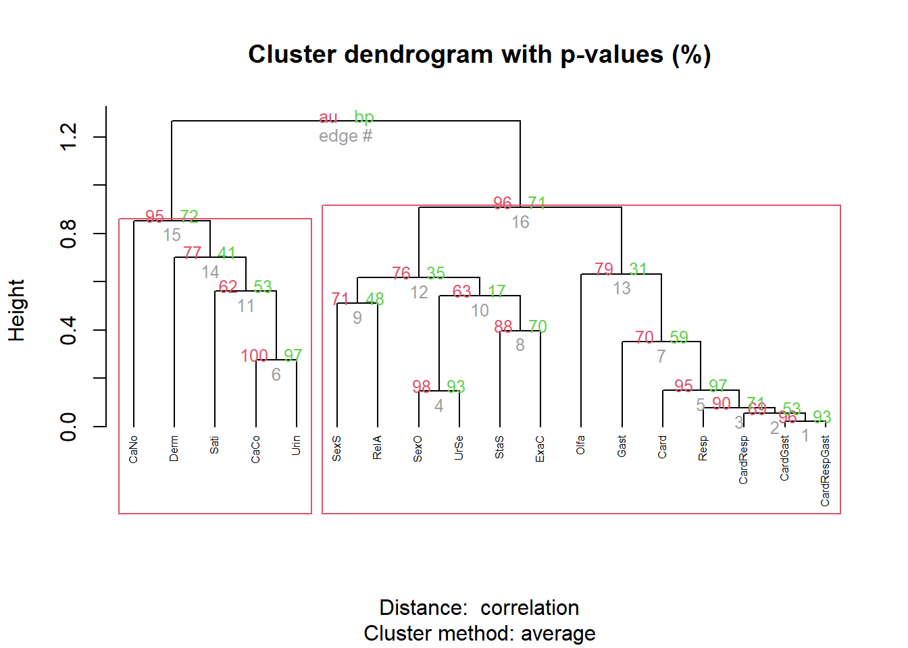
make_cor <- function(df1, df2) {
df1 |>
correlation::correlation(df2, p_adjust="none") |>
correlation::cor_sort() |>
mutate(label = ifelse(p < .001, paste0(insight::format_value(r)), ""),
Parameter1 = cleanlabels(Parameter1, qname=FALSE),
Parameter2 = cleanlabels(Parameter2, qname=TRUE)) |>
ggplot(aes(x=Parameter1, y=Parameter2, fill=r)) +
geom_tile() +
geom_text(aes(label=label), size=3) +
scale_fill_gradient2(low="blue", high="red", mid="white", midpoint=0) +
theme_minimal() +
theme(axis.text.x = element_text(angle = 45, hjust=1),
legend.position = "none")
}
make_cor(select(df, starts_with("MINT"), -matches("[[:digit:]]")),
select(df, starts_with("MAIA"), IAS, BPQ)) +
labs(x="MINT", y="", title="Correlations between the MINT and other Interoception Questionnaires") +
theme(axis.text.x = element_text(angle = 45, hjust=1,
face=c("bold", "plain", "plain", "plain", "bold", "bold", "plain", "plain",
"plain", "plain", "plain", "plain", "plain", "plain", "plain", "plain",
"plain", "plain")))select(df, starts_with("MINT"), starts_with("MAIA"), IAS, BPQ) |>
parameters::factor_analysis(n=4, rotation="oblimin") |>
plot()In smc, smcs < 0 were set to .0
In smc, smcs < 0 were set to .0
In smc, smcs < 0 were set to .0Loading required namespace: GPArotationWarning in cor.smooth(r): Matrix was not positive definite, smoothing was doneWarning in fac(r = r, nfactors = nfactors, n.obs = n.obs, rotate = rotate, : An
ultra-Heywood case was detected. Examine the results carefullyIn factor.scores, the correlation matrix is singular, the pseudo inverse is used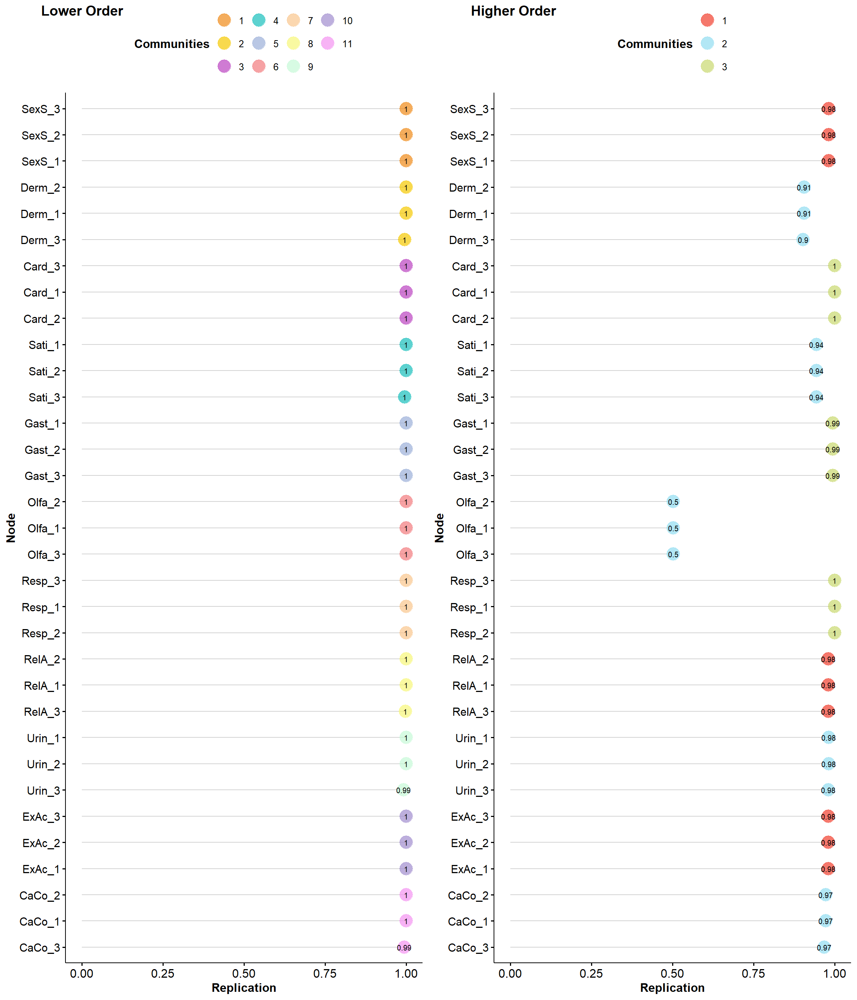
# library(umap)
#
# items_intero <- select(df, starts_with("MINT"), -matches("[[:digit:]]"), starts_with("MAIA"), IAS, BPQ)
# rez <- umap::umap(datawizard::data_transpose(items_intero[complete.cases(items_intero),]))
#
# rez
# as.data.frame(rez$layout) |>
# rownames_to_column(var="Variable") |>
# separate(Variable, into=c("Questionnaire", "Dimension", "Sub"), fill="right") |>
# ggplot(aes(x=V1, y=V2, color=Questionnaire)) +
# geom_point(size=3) +
# scale_color_manual(values=colors)table_models <- function(models) {
test <- test_performance(models)
test$Model <- NULL
test$Omega2 <- NULL
test$p_Omega2 <- NULL
test$R2 <- compare_performance(models, metrics="R2")$R2
preds <- c()
for(m in models){
x <- names(sort(abs(coef(m)[-1]), decreasing=TRUE))
preds <- c(preds, paste0(cleanlabels(x), collapse = ", "))
}
test$Predictors <- preds
format(test, zap_small = TRUE)
}
compare_models <- function(outcome="TAS_DIF") {
# Individual predictors
preds <- c("BPQ", "IAS",
names(select(df, starts_with("MINT"), -matches("[[:digit:]]"))),
names(select(df, starts_with("MAIA"))))
models <- list()
for(p in preds) {
models[[p]] <- lm(as.formula(paste0(outcome, " ~ ", p)), data=df)
}
perf <- compare_performance(models) |>
arrange(desc(R2))
best_mint <- perf$Name[str_detect(perf$Name, "MINT_")][1]
best_maia <- perf$Name[str_detect(perf$Name, "MAIA")][1]
models <- list()
df_pred <- data.frame()
for(p in c(best_mint, best_maia, "BPQ", "IAS")) {
models[[p]] <- lm(as.formula(paste0(outcome, " ~ ", p)), data=df)
pred <- modelbased::estimate_relation(models[[p]], by=p, length=30)
names(pred)[1] <- "Value"
pred$Predictor <- p
df_pred <- rbind(df_pred, pred)
}
test <- table_models(models)
test$Predictors <- NULL
cols <- colors
cols[[best_mint]] <- cols["MINT"]
cols[[best_maia]] <- cols["MAIA"]
p <- df_pred |>
mutate(Questionnaire = case_when(
str_detect(Predictor, "MINT") ~ "MINT",
str_detect(Predictor, "MAIA") ~ "MAIA",
.default = Predictor)) |>
ggplot(aes(x=Value, y=Predicted)) +
geom_ribbon(aes(ymin=CI_low, ymax=CI_high, fill=Predictor), alpha=0.3) +
geom_line(aes(color=Predictor)) +
scale_fill_manual(values=cols) +
scale_color_manual(values=cols) +
facet_wrap(~Predictor, scales="free_x") +
labs(y=outcome, x="Interoception Index")
# Full Questionnaires
m_mint <- lm(as.formula(paste0(outcome, " ~ .")),
data = select(df, all_of(outcome), starts_with("MINT"), -matches("[[:digit:]]$"))) |>
step(direction = "both", trace=0)
m_minti <- lm(as.formula(paste0(outcome, " ~ .")),
data = cbind(minti, df[outcome])) |>
step(direction = "both", trace=0)
m_ias <- lm(as.formula(paste0(outcome, " ~ IAS")),
data = df)
m_maia <- lm(as.formula(paste0(outcome, " ~ .")),
data = select(df, all_of(outcome), starts_with("MAIA"))) |>
step(direction = "both", trace=0)
m_maiai <- lm(as.formula(paste0(outcome, " ~ .")),
data = select(df, all_of(outcome),
starts_with("MAIA"),
-contains("NotWorrying"),
-contains("NotDistracting"))) |>
step(direction = "both", trace=0)
m_maiamin <- lm(as.formula(paste0(outcome, " ~ .")),
data = select(df, all_of(outcome),
MAIA_AttentionRegulation, # remove?
MAIA_SelfRegulation, # remove?
# MAIA_Trusting, # remove?
MAIA_BodyListening,
MAIA_EmotionalAwareness,
MAIA_Noticing)) |>
step(direction = "both", trace=0)
m_bpq <- lm(as.formula(paste0(outcome, " ~ BPQ")),
data = df)
models_full <- list(m_mint=m_mint, m_minti=m_minti, m_maia=m_maia, m_maiai=m_maiai, m_maiamin=m_maiamin, m_ias=m_ias, m_bpq=m_bpq)
test_all <- table_models(models_full)
list(test=test, test_all=test_all, p=p, models_full=models_full)
}
rez1 <- compare_models("TAS_DIF")
display(rez1$test, title="DIF")| Name | BF | LR | p (LR) | R2 |
|---|---|---|---|---|
| MINT_Deficit_CaCo | 0.14 | |||
| MAIA_Trusting | 7.08 | -0.17 | 0.431 | 0.15 |
| BPQ | < 0.001 | 4.26 | < .001 | 0.00 |
| IAS | < 0.001 | 2.15 | 0.016 | 0.06 |
Each model is compared to MINT_Deficit_CaCo.
rez1$pdisplay(rez1$test_all, title="DIF")| Name | BF | LR | p (LR) | R2 | Predictors |
|---|---|---|---|---|---|
| m_mint | 0.30 | Awareness (RelA), Deficit (CaCo), Deficit (Olfa), Deficit (Sati), Deficit (CaNo), Deficit (Urin), Interoception (Card), Awareness (SexS) | |||
| m_minti | < 0.001 | 6.13 | < .001 | 0.07 | Awareness, Interoception |
| m_maia | < 0.001 | 2.30 | 0.011 | 0.21 | Trusting, NotDistracting, EmotionalAwareness, NotWorrying, AttentionRegulation |
| m_maiai | < 0.001 | 3.21 | < .001 | 0.17 | Trusting, EmotionalAwareness, AttentionRegulation |
| m_maiamin | < 0.001 | 5.09 | < .001 | 0.09 | AttentionRegulation, EmotionalAwareness, SelfRegulation |
| m_ias | < 0.001 | 5.89 | < .001 | 0.06 | IAS |
| m_bpq | < 0.001 | 7.33 | < .001 | 0.00 | BPQ |
Each model is compared to m_mint.
rez2 <- compare_models("TAS_DDF")
display(rez2$test, title="DDF")| Name | BF | LR | p (LR) | R2 |
|---|---|---|---|---|
| MINT_Deficit_CaCo | 0.10 | |||
| MAIA_Trusting | > 1000 | -0.90 | 0.184 | 0.14 |
| BPQ | < 0.001 | 3.75 | < .001 | 0.00 |
| IAS | < 0.001 | 1.20 | 0.115 | 0.07 |
Each model is compared to MINT_Deficit_CaCo.
rez2$pdisplay(rez2$test_all, title="DDF")| Name | BF | LR | p (LR) | R2 | Predictors |
|---|---|---|---|---|---|
| m_mint | 0.21 | Awareness (RelA), Awareness (SexS), Deficit (CaCo), Deficit (Sati), Deficit (Urin), Sensitivity (Derm), Deficit (Olfa), Awareness (SexO), Interoception (Resp) | |||
| m_minti | < 0.001 | 4.64 | < .001 | 0.06 | Awareness, Interoception |
| m_maia | > 1000 | 1.04 | 0.150 | 0.18 | Trusting, NotDistracting, BodyListening |
| m_maiai | 0.754 | 2.02 | 0.022 | 0.14 | Trusting, Noticing |
| m_maiamin | < 0.001 | 4.60 | < .001 | 0.05 | AttentionRegulation, Noticing |
| m_ias | < 0.001 | 4.13 | < .001 | 0.07 | IAS |
| m_bpq | < 0.001 | 5.91 | < .001 | 0.00 | BPQ |
Each model is compared to m_mint.
rez3 <- compare_models("TAS_EOT")
display(rez3$test, title="EOT")| Name | BF | LR | p (LR) | R2 |
|---|---|---|---|---|
| MINT_Deficit_Sati | 0.09 | |||
| MAIA_Trusting | < 0.001 | 1.08 | 0.139 | 0.06 |
| BPQ | < 0.001 | 3.54 | < .001 | 0.01 |
| IAS | < 0.001 | 1.88 | 0.030 | 0.04 |
Each model is compared to MINT_Deficit_Sati.
rez3$pdisplay(rez3$test_all, title="EOT")| Name | BF | LR | p (LR) | R2 | Predictors |
|---|---|---|---|---|---|
| m_mint | 0.23 | Deficit (Sati), Deficit (Urin), Deficit (CaCo), Awareness (RelA), Deficit (Olfa), Awareness (StaS), Awareness (ExaC), Interoception (Resp) | |||
| m_minti | < 0.001 | 5.37 | < .001 | 0.03 | Awareness, Interoception |
| m_maia | < 0.001 | 2.46 | 0.007 | 0.13 | Trusting, NotDistracting, EmotionalAwareness, NotWorrying |
| m_maiai | < 0.001 | 3.46 | < .001 | 0.09 | Trusting, EmotionalAwareness |
| m_maiamin | < 0.001 | 4.60 | < .001 | 0.05 | AttentionRegulation, EmotionalAwareness |
| m_ias | < 0.001 | 5.06 | < .001 | 0.04 | IAS |
| m_bpq | < 0.001 | 5.83 | < .001 | 0.01 | BPQ |
Each model is compared to m_mint.
make_cor(select(df, starts_with("TAS_")),
select(df, starts_with("MINT"), -matches("[[:digit:]]"),
starts_with("MAIA"), IAS, BPQ))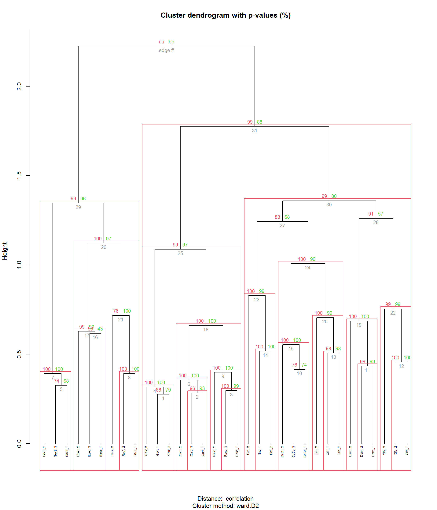
CaCo and Sati.
rez <- compare_models("LifeSatisfaction")
display(rez$test, title="Life Satisfaction") | Name | BF | LR | p (LR) | R2 |
|---|---|---|---|---|
| MINT_Awareness_RelA | 0.07 | |||
| MAIA_Trusting | > 1000 | -6.06 | < .001 | 0.30 |
| BPQ | < 0.001 | 2.92 | 0.002 | 0.00 |
| IAS | 0.006 | 0.73 | 0.232 | 0.05 |
Each model is compared to MINT_Awareness_RelA.
rez$p
display(rez$test_all, title="Life Satisfaction")| Name | BF | LR | p (LR) | R2 | Predictors |
|---|---|---|---|---|---|
| m_mint | 0.16 | Awareness (RelA), Deficit (CaCo), Awareness (SexS), Awareness (StaS), Interoception (Resp), Deficit (Urin), Awareness (SexO), Deficit (CaNo), Sensitivity (Derm) | |||
| m_minti | < 0.001 | 4.32 | < .001 | 0.03 | Awareness, Interoception |
| m_maia | > 1000 | -3.86 | < .001 | 0.31 | Trusting, Noticing, SelfRegulation |
| m_maiai | > 1000 | -3.86 | < .001 | 0.31 | Trusting, Noticing, SelfRegulation |
| m_maiamin | > 1000 | 0.33 | 0.370 | 0.15 | SelfRegulation, AttentionRegulation, Noticing |
| m_ias | 0.001 | 3.38 | < .001 | 0.05 | IAS |
| m_bpq | < 0.001 | 4.86 | < .001 | 0.00 | BPQ |
Each model is compared to m_mint.
rez <- compare_models("PHQ4_Anxiety")
display(rez$test, title="Anxiety") | Name | BF | LR | p (LR) | R2 |
|---|---|---|---|---|
| MINT_Deficit_CaCo | 0.12 | |||
| MAIA_Trusting | > 1000 | -1.83 | 0.033 | 0.19 |
| BPQ | < 0.001 | 3.49 | < .001 | 0.01 |
| IAS | < 0.001 | 3.48 | < .001 | 0.02 |
Each model is compared to MINT_Deficit_CaCo.
rez$p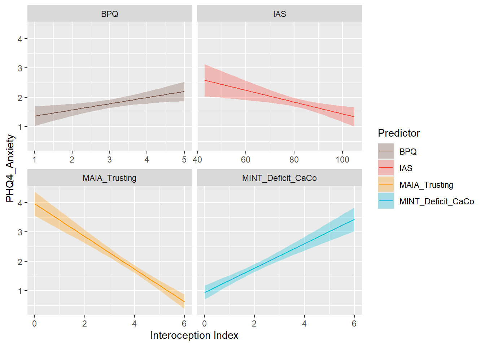
display(rez$test_all, title="Anxiety")| Name | BF | LR | p (LR) | R2 | Predictors |
|---|---|---|---|---|---|
| m_mint | 0.21 | Awareness (RelA), Deficit (CaCo), Sensitivity (Derm), Awareness (StaS), Deficit (Olfa), Deficit (Urin), Awareness (SexS) | |||
| m_minti | < 0.001 | 5.01 | < .001 | 0.06 | Awareness, Interoception |
| m_maia | > 1000 | -3.31 | < .001 | 0.33 | Trusting, NotWorrying, Noticing, NotDistracting, BodyListening, SelfRegulation |
| m_maiai | > 1000 | -1.73 | 0.041 | 0.27 | Trusting, Noticing, BodyListening, SelfRegulation, AttentionRegulation |
| m_maiamin | < 0.001 | 1.74 | 0.041 | 0.15 | Noticing, AttentionRegulation, SelfRegulation, BodyListening |
| m_ias | < 0.001 | 5.55 | < .001 | 0.02 | IAS |
| m_bpq | < 0.001 | 5.56 | < .001 | 0.01 | BPQ |
Each model is compared to m_mint.
rez <- compare_models("PHQ4_Depression")
display(rez$test, title="Depression") | Name | BF | LR | p (LR) | R2 |
|---|---|---|---|---|
| MINT_Deficit_CaCo | 0.11 | |||
| MAIA_Trusting | > 1000 | -2.94 | 0.002 | 0.23 |
| BPQ | < 0.001 | 3.60 | < .001 | 0.01 |
| IAS | < 0.001 | 2.92 | 0.002 | 0.03 |
Each model is compared to MINT_Deficit_CaCo.
rez$p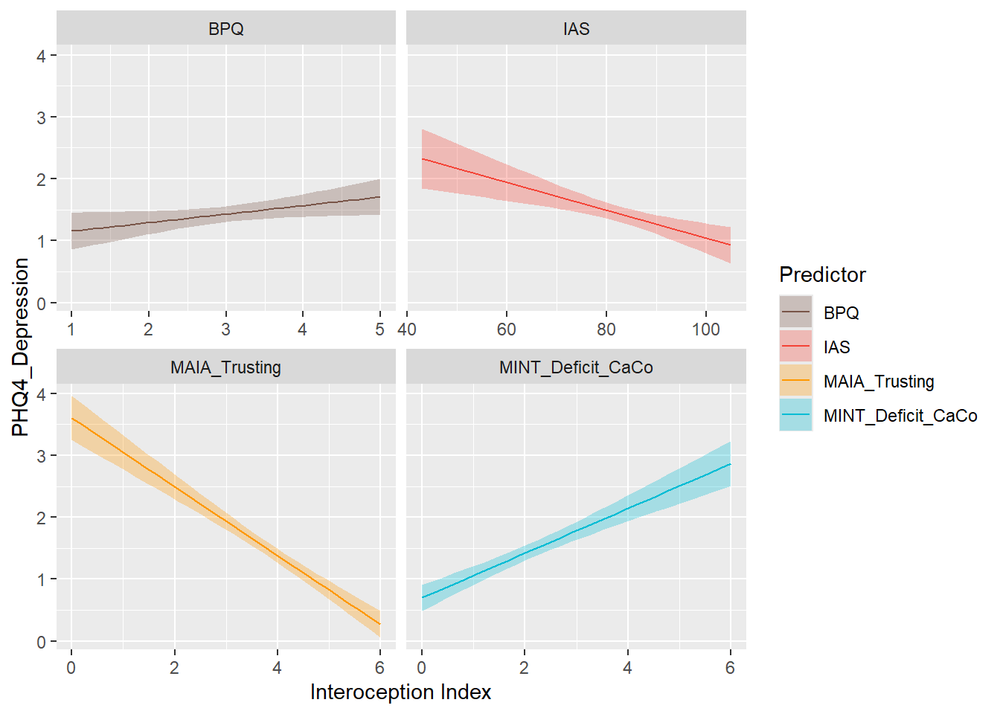
display(rez$test_all, title="Depression")| Name | BF | LR | p (LR) | R2 | Predictors |
|---|---|---|---|---|---|
| m_mint | 0.20 | Awareness (RelA), Deficit (CaCo), Sensitivity (Derm), Deficit (Urin), Deficit (Olfa) | |||
| m_minti | < 0.001 | 5.87 | < .001 | 0.04 | Awareness, Interoception |
| m_maia | > 1000 | -2.63 | 0.004 | 0.31 | Trusting, Noticing, NotDistracting, SelfRegulation, BodyListening, NotWorrying |
| m_maiai | > 1000 | -2.10 | 0.018 | 0.29 | Trusting, Noticing, SelfRegulation, BodyListening |
| m_maiamin | < 0.001 | 1.90 | 0.029 | 0.13 | Noticing, AttentionRegulation, SelfRegulation, BodyListening |
| m_ias | < 0.001 | 5.27 | < .001 | 0.03 | IAS |
| m_bpq | < 0.001 | 5.63 | < .001 | 0.01 | BPQ |
Each model is compared to m_mint.
make_cor(select(df, LifeSatisfaction, starts_with("PHQ4_")),
select(df, starts_with("MINT"), -matches("[[:digit:]]"),
starts_with("MAIA"), IAS, BPQ))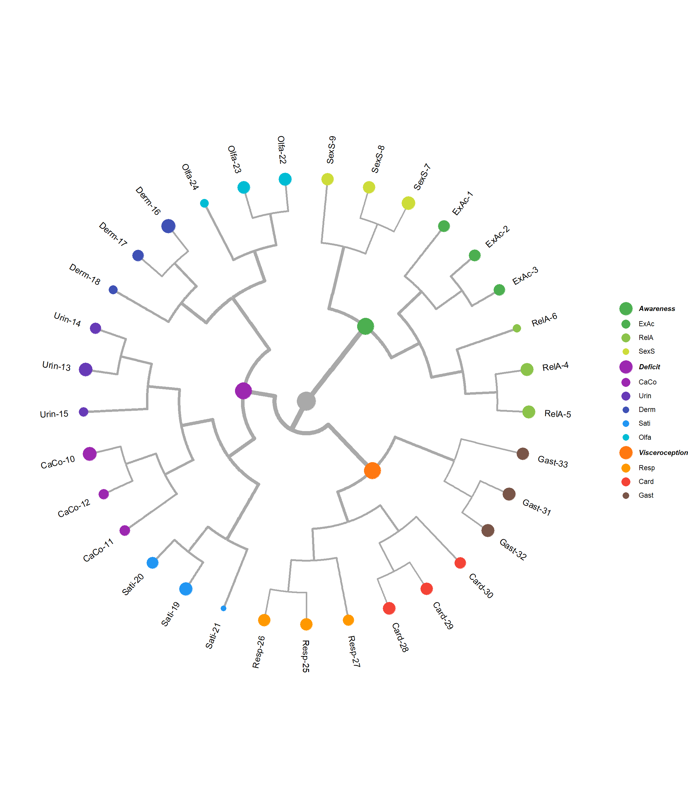
rez <- compare_models("ERS_Arousal")
display(rez$test, title="Arousal") | Name | BF | LR | p (LR) | R2 |
|---|---|---|---|---|
| MINT_Deficit_CaCo | 0.10 | |||
| MAIA_NotWorrying | > 1000 | -1.58 | 0.057 | 0.16 |
| BPQ | < 0.001 | 2.66 | 0.004 | 0.02 |
| IAS | < 0.001 | 3.44 | < .001 | 0.00 |
Each model is compared to MINT_Deficit_CaCo.
rez$p
display(rez$test_all, title="Arousal")| Name | BF | LR | p (LR) | R2 | Predictors |
|---|---|---|---|---|---|
| m_mint | 0.19 | Awareness (RelA), Deficit (CaCo), Deficit (Olfa), Awareness (StaS), Sensitivity (Derm), Awareness (ExaC), Deficit (Urin) | |||
| m_minti | < 0.001 | 4.67 | < .001 | 0.03 | Interoception, Awareness |
| m_maia | > 1000 | -2.09 | 0.018 | 0.27 | EmotionalAwareness, NotWorrying, Trusting, SelfRegulation, NotDistracting, Noticing |
| m_maiai | > 1000 | -0.90 | 0.184 | 0.22 | EmotionalAwareness, Trusting, SelfRegulation, Noticing |
| m_maiamin | 128.66 | 0.37 | 0.354 | 0.17 | EmotionalAwareness, SelfRegulation, AttentionRegulation, Noticing |
| m_ias | < 0.001 | 5.20 | < .001 | 0.00 | IAS |
| m_bpq | < 0.001 | 4.80 | < .001 | 0.02 | BPQ |
Each model is compared to m_mint.
rez <- compare_models("ERS_Sensitivity")
display(rez$test, title="Sensitivity") | Name | BF | LR | p (LR) | R2 |
|---|---|---|---|---|
| MINT_Deficit_CaCo | 0.12 | |||
| MAIA_NotWorrying | > 1000 | -1.56 | 0.059 | 0.18 |
| BPQ | < 0.001 | 3.50 | < .001 | 0.01 |
| IAS | < 0.001 | 3.90 | < .001 | 0.00 |
Each model is compared to MINT_Deficit_CaCo.
rez$p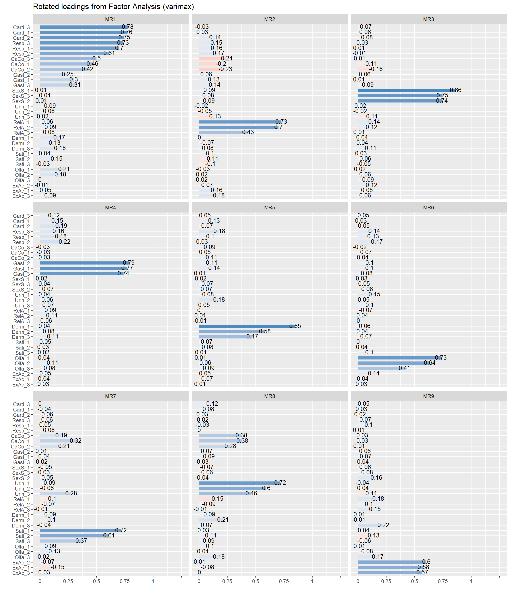
display(rez$test_all, title="Sensitivity")| Name | BF | LR | p (LR) | R2 | Predictors |
|---|---|---|---|---|---|
| m_mint | 0.19 | Deficit (CaCo), Sensitivity (Derm), Awareness (RelA), Awareness (StaS), Awareness (ExaC), Deficit (Urin), Deficit (Olfa) | |||
| m_minti | < 0.001 | 4.71 | < .001 | 0.04 | Interoception, Awareness |
| m_maia | > 1000 | -1.77 | 0.039 | 0.25 | NotWorrying, Trusting, EmotionalAwareness, SelfRegulation, Noticing, BodyListening |
| m_maiai | > 1000 | -0.49 | 0.313 | 0.20 | Trusting, EmotionalAwareness, Noticing, AttentionRegulation, SelfRegulation, BodyListening |
| m_maiamin | 0.004 | 0.99 | 0.160 | 0.15 | AttentionRegulation, EmotionalAwareness, SelfRegulation, Noticing, BodyListening |
| m_ias | < 0.001 | 5.13 | < .001 | 0.00 | IAS |
| m_bpq | < 0.001 | 4.96 | < .001 | 0.01 | BPQ |
Each model is compared to m_mint.
rez <- compare_models("ERS_Persistence")
display(rez$test, title="Persistence") | Name | BF | LR | p (LR) | R2 |
|---|---|---|---|---|
| MINT_Deficit_CaCo | 0.12 | |||
| MAIA_NotWorrying | > 1000 | -1.18 | 0.119 | 0.16 |
| BPQ | < 0.001 | 3.68 | < .001 | 0.01 |
| IAS | < 0.001 | 3.40 | < .001 | 0.01 |
Each model is compared to MINT_Deficit_CaCo.
rez$pdisplay(rez$test_all, title="Persistence")| Name | BF | LR | p (LR) | R2 | Predictors |
|---|---|---|---|---|---|
| m_mint | 0.19 | Deficit (CaCo), Deficit (Olfa), Awareness (RelA), Awareness (StaS), Interoception (Resp), Deficit (Urin), Sensitivity (Derm), Deficit (Sati) | |||
| m_minti | < 0.001 | 4.98 | < .001 | 0.02 | Awareness, Interoception |
| m_maia | > 1000 | -1.49 | 0.068 | 0.25 | NotWorrying, EmotionalAwareness, Trusting, SelfRegulation, NotDistracting |
| m_maiai | > 1000 | -0.29 | 0.388 | 0.21 | EmotionalAwareness, Trusting, SelfRegulation, AttentionRegulation, Noticing |
| m_maiamin | 4.17 | 0.88 | 0.190 | 0.16 | EmotionalAwareness, AttentionRegulation, SelfRegulation, Noticing |
| m_ias | < 0.001 | 4.99 | < .001 | 0.01 | IAS |
| m_bpq | < 0.001 | 5.10 | < .001 | 0.01 | BPQ |
Each model is compared to m_mint.
make_cor(select(df, starts_with("ERS_")),
select(df, starts_with("MINT"), -matches("[[:digit:]]"),
starts_with("MAIA"), IAS, BPQ))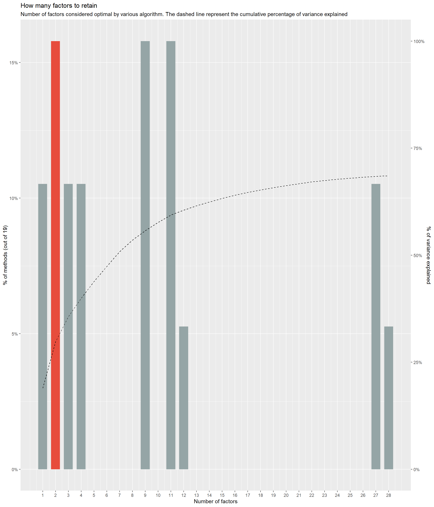
compare_predictive <- function(outcome="Disorders_Psychiatric_Mood", y = c(0.65, 0.60, 0.50, 0.45, 0.40, 0.30, 0.20)) {
m_mint <- glm(as.formula(paste0(outcome, " ~ .")),
data = select(df, all_of(outcome), starts_with("MINT"), -matches("[[:digit:]]$")),
family = "binomial") |>
step(direction = "both", trace=0)
m_minti <- glm(as.formula(paste0(outcome, " ~ .")),
data = cbind(minti, df[outcome]),
family = "binomial") |>
step(direction = "both", trace=0)
m_ias <- glm(as.formula(paste0(outcome, " ~ IAS")),
data = df,
family = "binomial")
m_maia <- glm(as.formula(paste0(outcome, " ~ .")),
data = select(df, all_of(outcome), starts_with("MAIA")),
family = "binomial") |>
step(direction = "both", trace=0)
m_maiai <- glm(as.formula(paste0(outcome, " ~ .")),
data = select(df, all_of(outcome),
starts_with("MAIA"),
-contains("NotWorrying"),
-contains("NotDistracting")),
family = "binomial") |>
step(direction = "both", trace=0)
m_maiamin <- glm(as.formula(paste0(outcome, " ~ .")),
data = select(df, all_of(outcome),
MAIA_AttentionRegulation, # remove?
MAIA_SelfRegulation, # remove?
# MAIA_Trusting, # remove?
MAIA_BodyListening,
MAIA_EmotionalAwareness,
MAIA_Noticing),
family = "binomial") |>
step(direction = "both", trace=0)
m_bpq <- glm(as.formula(paste0(outcome, " ~ BPQ")),
data = df,
family = "binomial")
test <- table_models(list(m_mint=m_mint, m_minti=m_minti, m_maia=m_maia, m_maiai=m_maiai, m_maiamin=m_maiamin, m_ias=m_ias, m_bpq=m_bpq))
get_auc <- function(m) {
roc <- as.data.frame(performance_roc(m))
auc <- bayestestR::area_under_curve(roc$Specificity, roc$Sensitivity)
paste0("AUC = ", insight::format_percent(auc))
}
p <- rbind(
mutate(as.data.frame(performance_roc(m_mint)), Predictor = "MINT"),
mutate(as.data.frame(performance_roc(m_minti)), Predictor = "MINTi"),
mutate(as.data.frame(performance_roc(m_maia)), Predictor = "MAIA"),
mutate(as.data.frame(performance_roc(m_maiai)), Predictor = "MAIAi"),
mutate(as.data.frame(performance_roc(m_maiamin)), Predictor = "MAIAmin"),
mutate(as.data.frame(performance_roc(m_ias)), Predictor = "IAS"),
mutate(as.data.frame(performance_roc(m_bpq)), Predictor = "BPQ")
) |>
mutate(Predictor = fct_relevel(Predictor, "MINT", "MINTi", "MAIA", "MAIAi", "MAIAmin", "IAS", "BPQ")) |>
ggplot(aes(x=Specificity)) +
geom_abline(intercept=0, slope=1, color="gray") +
geom_line(aes(y=Sensitivity, color=Predictor), linewidth=2, alpha=0.9) +
geom_label(data=data.frame(
label = c(get_auc(m_mint), get_auc(m_minti), get_auc(m_maia), get_auc(m_maiai), get_auc(m_maiamin), get_auc(m_ias), get_auc(m_bpq)),
Predictor = c("MINT", "MINTi", "MAIA", "MAIAi", "MAIAmin", "IAS", "BPQ"),
x = 0.9,
y = y),
aes(x=x, y=y, label=label), color=colors[c("MINT", "MINTi", "MAIA", "MAIAi", "MAIAmin", "IAS", "BPQ")]) +
labs(x= "1 - Specificity (False Positive Rate)", y="Sensitivity (True Positive Rate)",
color="Questionnaire Version") +
scale_color_manual(values=colors) +
scale_x_continuous(labels=scales::percent) +
scale_y_continuous(labels=scales::percent) +
theme_minimal()
list(m_mint=m_mint, m_ias=m_ias, m_maia=m_maia, m_maiai=m_maiai, m_maiamin=m_maiamin, test=test, p=p)
}rez <- compare_predictive("Disorders_Psychiatric_Mood")
rez$pdisplay(rez$test, title="Mood")| Name | BF | LR | p (LR) | R2 | Predictors |
|---|---|---|---|---|---|
| m_mint | 0.07 | Awareness (StaS), Deficit (CaCo), Sensitivity (Derm), Awareness (ExaC), Deficit (Olfa), Awareness (RelA), Awareness (SexO) | |||
| m_minti | 1.68 | 2.91 | 0.002 | 0.01 | Awareness, Interoception |
| m_maia | > 1000 | -2.14 | 0.016 | 0.16 | Trusting, AttentionRegulation, NotWorrying |
| m_maiai | > 1000 | -1.50 | 0.067 | 0.13 | Trusting, Noticing, AttentionRegulation |
| m_maiamin | > 1000 | 1.36 | 0.086 | 0.04 | SelfRegulation, Noticing |
| m_ias | 3.28 | 3.07 | 0.001 | 0.00 | IAS |
| m_bpq | 4.43 | 3.05 | 0.001 | 0.00 | BPQ |
Each model is compared to m_mint.
rez <- compare_predictive("Disorders_Psychiatric_MoodTreatment")
rez$p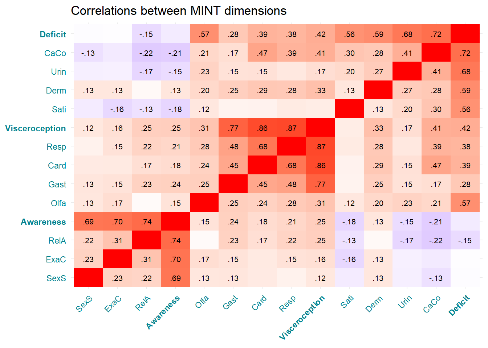
display(rez$test, title="Mood (with Treatment)")| Name | BF | LR | p (LR) | R2 | Predictors |
|---|---|---|---|---|---|
| m_mint | 0.06 | Sensitivity (Derm), Awareness (ExaC), Deficit (Olfa), Awareness (SexO), Deficit (CaCo) | |||
| m_minti | 1.44 | 2.36 | 0.009 | 0.02 | Awareness, Interoception |
| m_maia | > 1000 | -1.72 | 0.043 | 0.12 | Trusting, AttentionRegulation, NotWorrying, BodyListening |
| m_maiai | > 1000 | -1.28 | 0.100 | 0.10 | Trusting, BodyListening, AttentionRegulation |
| m_maiamin | 30.99 | 1.15 | 0.126 | 0.03 | SelfRegulation, BodyListening |
| m_ias | 5.84 | 2.14 | 0.016 | 0.01 | IAS |
| m_bpq | 2.47 | 2.32 | 0.010 | 0.00 | BPQ |
Each model is compared to m_mint.
rez <- compare_predictive("Disorders_Psychiatric_Anxiety")
rez$p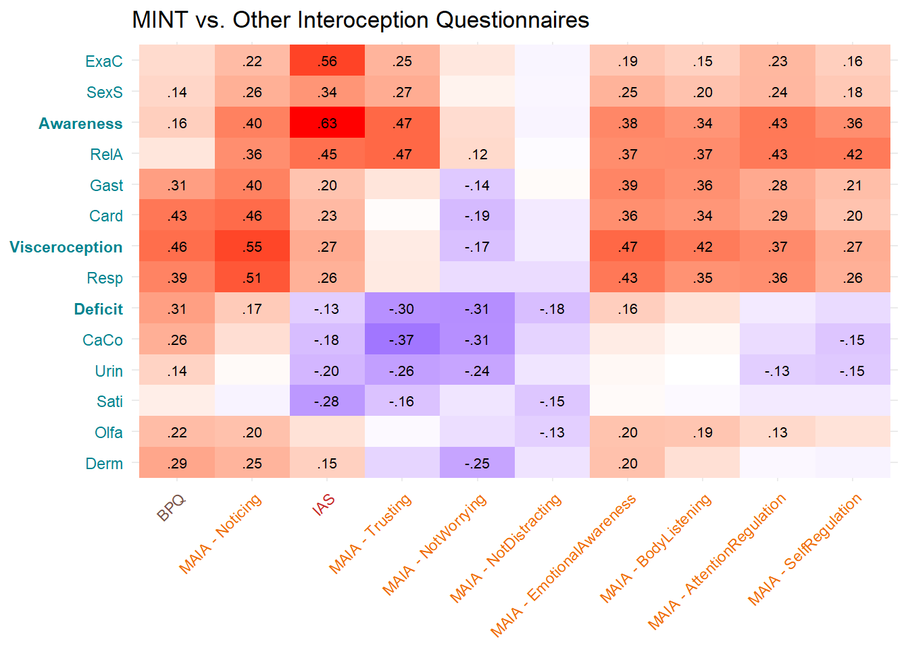
rez <- compare_predictive("Disorders_Psychiatric_AnxietyTreatment")
rez$p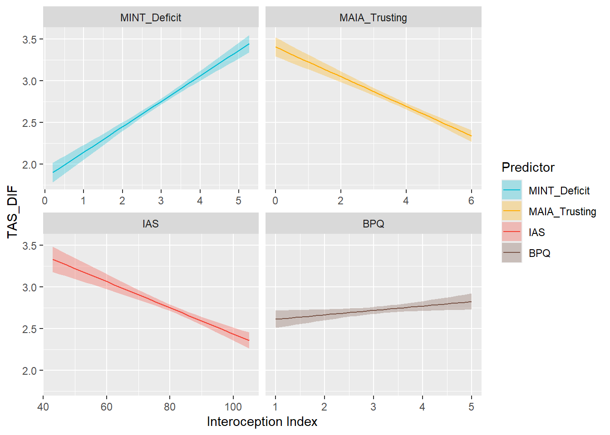
rez <- compare_predictive("Disorders_Psychiatric_Eating")
rez$p
rez <- compare_predictive("Disorders_Psychiatric_Addiction")
rez$p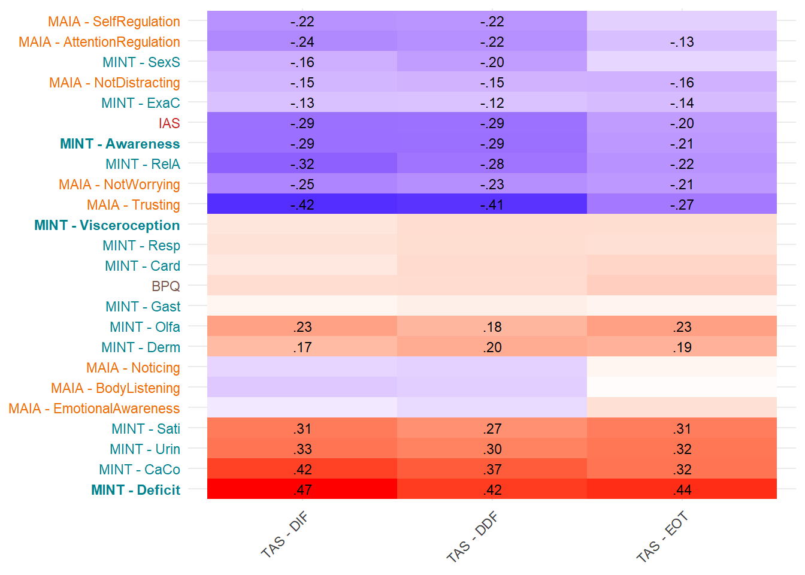
rez <- compare_predictive("Disorders_Psychiatric_ADHD")
rez$p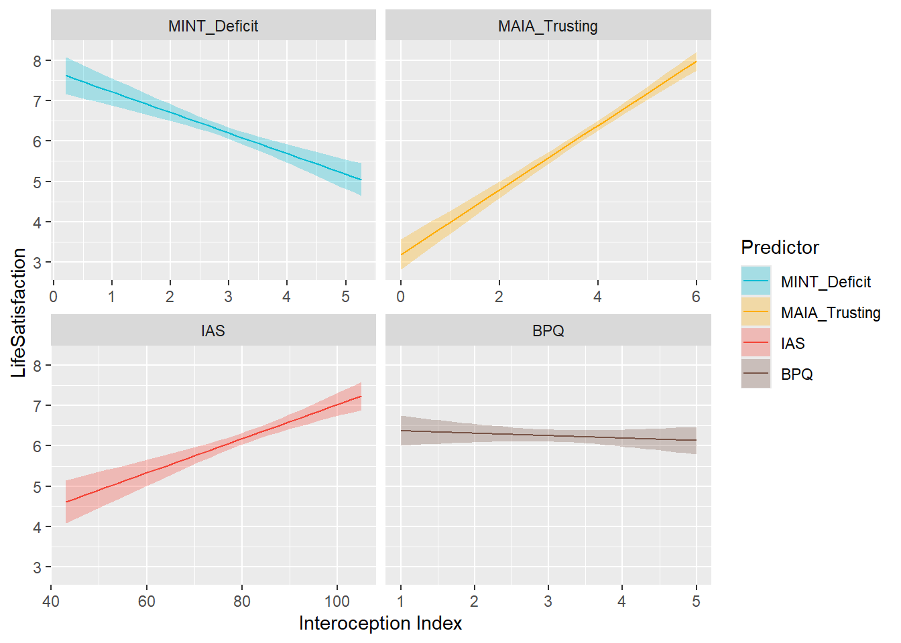
rez <- compare_predictive("Disorders_Psychiatric_Autism")
rez$p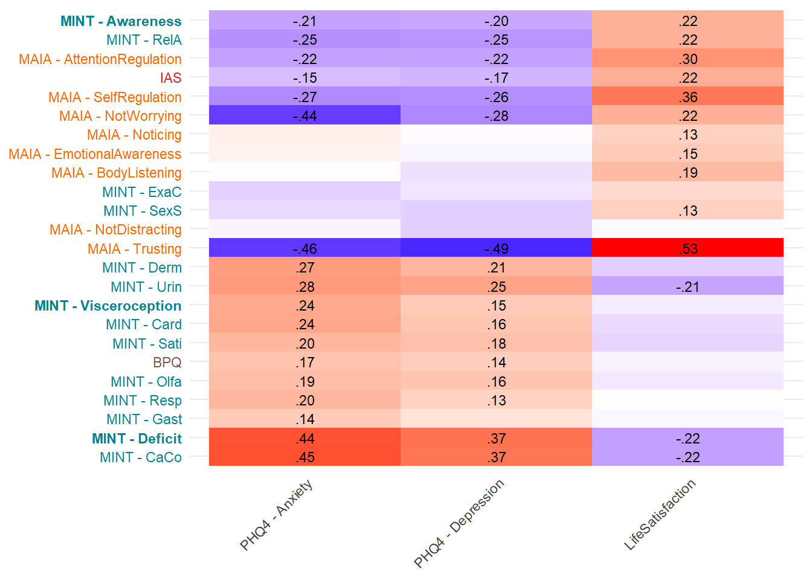
# rez <- compare_predictive("Disorders_Psychiatric_Borderline")
# rez$prez <- compare_predictive("Disorders_Somatic_Autonomic")
rez$p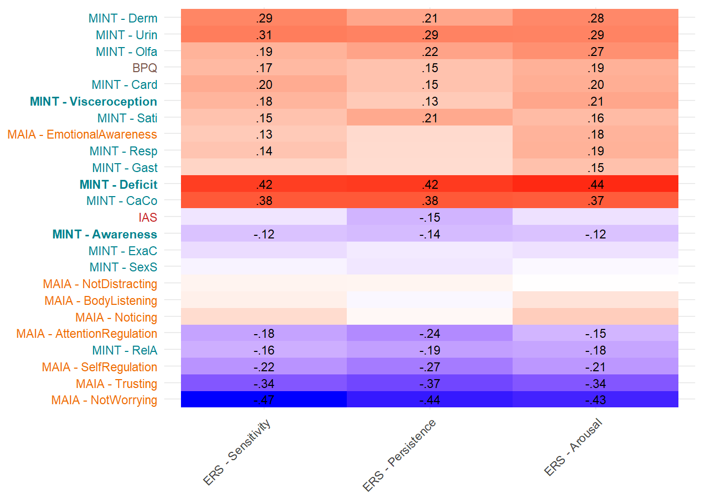
rez <- compare_predictive("Disorders_Somatic_Functional")
rez$prez <- compare_predictive("Disorders_Somatic_Hyperreactivity")
rez$prez <- compare_predictive("Disorders_Somatic_Immune")
rez$p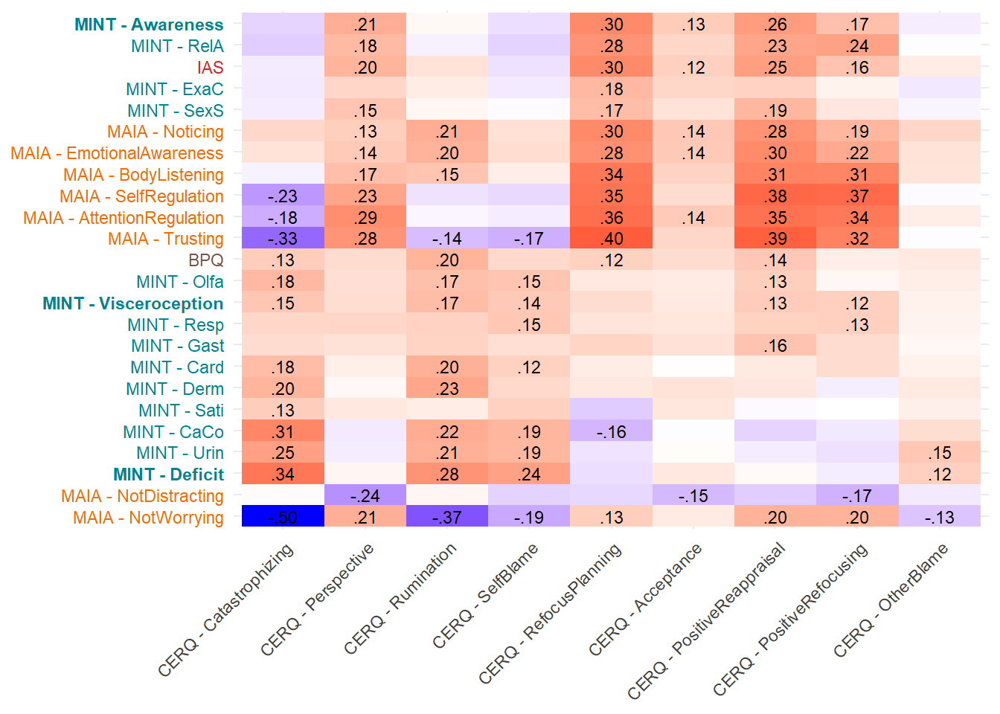
rez <- compare_predictive("Disorders_Somatic_Cardio")
rez$p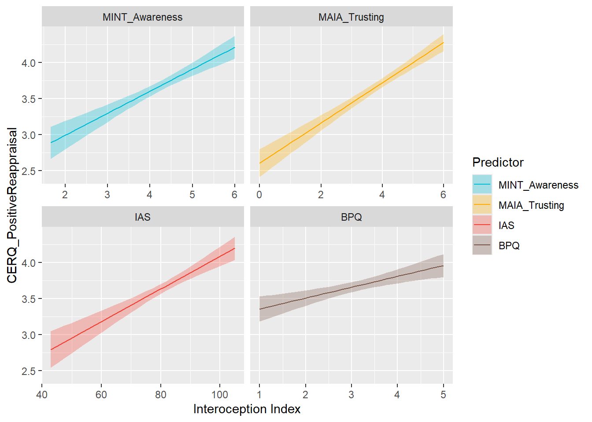
rez <- compare_predictive("Disorders_Somatic_Connective")
rez$p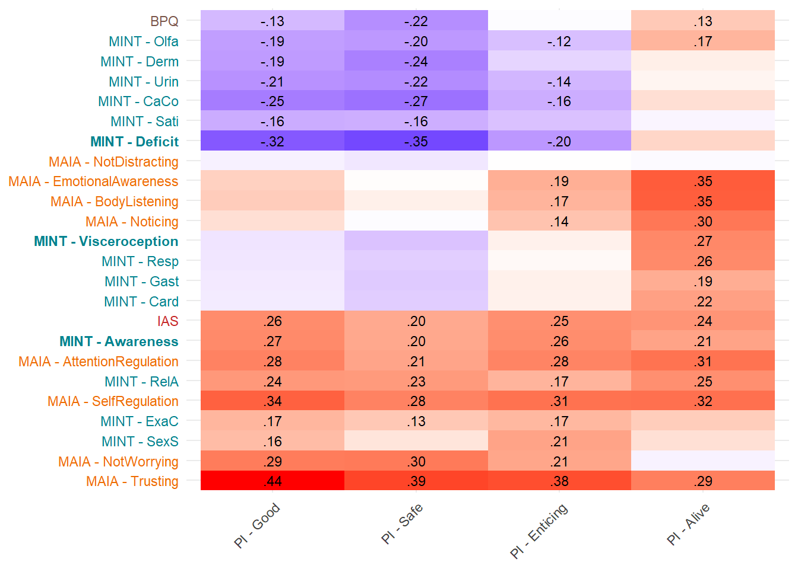
model <- glm(as.formula(paste0("Wearables_Number ~ .")),
data = select(df, Wearables_Number, starts_with("MINT"), -matches("[[:digit:]]")),
family = "poisson") |>
step(direction = "both", trace=0)
parameters::parameters(model)Parameter | Log-Mean | SE | 95% CI | z | p
---------------------------------------------------------------------------
(Intercept) | 1.11 | 0.21 | [ 0.69, 1.52] | 5.24 | < .001
MINT Deficit Urin | 0.04 | 0.02 | [ 0.00, 0.09] | 1.97 | 0.049
MINT Deficit Sati | -0.05 | 0.02 | [-0.09, 0.00] | -2.15 | 0.031
MINT Awareness StaS | -0.07 | 0.04 | [-0.14, 0.00] | -1.88 | 0.060
MINT Awareness ExaC | -0.06 | 0.03 | [-0.12, 0.01] | -1.79 | 0.073
MINT Interoception Resp | 0.05 | 0.02 | [ 0.01, 0.09] | 2.20 | 0.028
MINT Deficit Olfa | 0.04 | 0.02 | [ 0.00, 0.09] | 1.91 | 0.056
Uncertainty intervals (profile-likelihood) and p-values (two-tailed)
computed using a Wald z-distribution approximation.
The model has a log- or logit-link. Consider using `exponentiate =
TRUE` to interpret coefficients as ratios.# Heart
m_owns <- glm(as.formula(paste0("Wearables_Heart ~ .")),
data = df |>
mutate(Wearables_Heart = Wearables_Heart != "Not owning") |>
select(Wearables_Heart, starts_with("MINT"), -matches("[[:digit:]]")),
family = "binomial") |>
step(direction = "both", trace=0, k = log(nrow(df)))
parameters::parameters(m_owns)Parameter | Log-Odds | SE | 95% CI | z | p
---------------------------------------------------------------------------
(Intercept) | -1.05 | 0.21 | [-1.46, -0.64] | -5.04 | < .001
MINT Interoception Resp | 0.23 | 0.06 | [ 0.10, 0.35] | 3.59 | < .001
Uncertainty intervals (profile-likelihood) and p-values (two-tailed)
computed using a Wald z-distribution approximation.model <- lm(as.formula(paste0("Wearables_HeartImportance ~ .")),
data = df |>
filter(!is.na(Wearables_HeartImportance)) |>
select(Wearables_HeartImportance, starts_with("MINT"), -matches("[[:digit:]]"))) |>
step(direction = "both", trace=0, k = log(nrow(filter(df, !is.na(Wearables_HeartImportance)))))
parameters::parameters(model)Parameter | Coefficient | SE | 95% CI | t(207) | p
-----------------------------------------------------------------------------
(Intercept) | 1.48 | 0.56 | [0.37, 2.58] | 2.64 | 0.009
MINT Awareness SexS | 0.25 | 0.11 | [0.05, 0.46] | 2.41 | 0.017
MINT Awareness RelA | 0.26 | 0.10 | [0.07, 0.45] | 2.68 | 0.008
MINT Interoception Card | 0.31 | 0.08 | [0.15, 0.47] | 3.91 | < .001
Uncertainty intervals (equal-tailed) and p-values (two-tailed) computed
using a Wald t-distribution approximation.lm(Wearables_HeartImportance ~ MINT_Interoception_Card, data=df) |>
estimate_relation() |>
plot()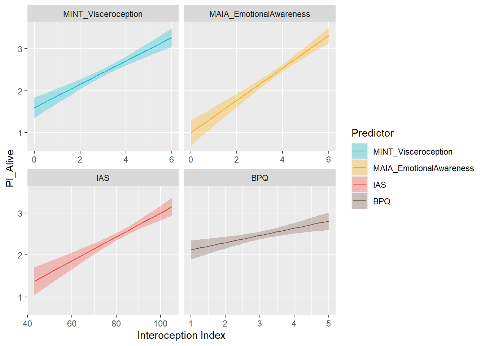
make_cor(select(df, starts_with("MINT"), -matches("[[:digit:]]")),
select(df, starts_with("CEFSA")))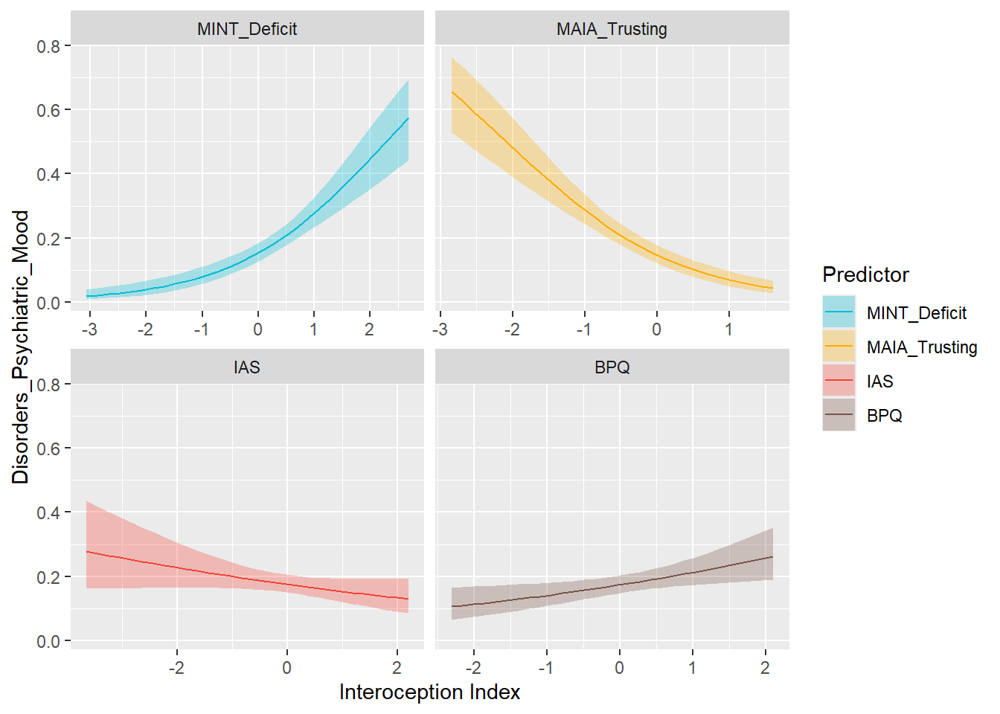
make_cor(select(df, starts_with("MAIA"), IAS, BPQ),
select(df, starts_with("CEFSA")))
make_cor(select(df, starts_with("MINT"), -matches("[[:digit:]]")),
select(df, starts_with("CERQ")))
make_cor(select(df, starts_with("MAIA"), IAS, BPQ),
select(df, starts_with("CERQ")))make_cor(select(df, starts_with("MINT"), -matches("[[:digit:]]")),
select(df, starts_with("PI")))make_cor(select(df, starts_with("MAIA"), IAS, BPQ),
select(df, starts_with("PI")))